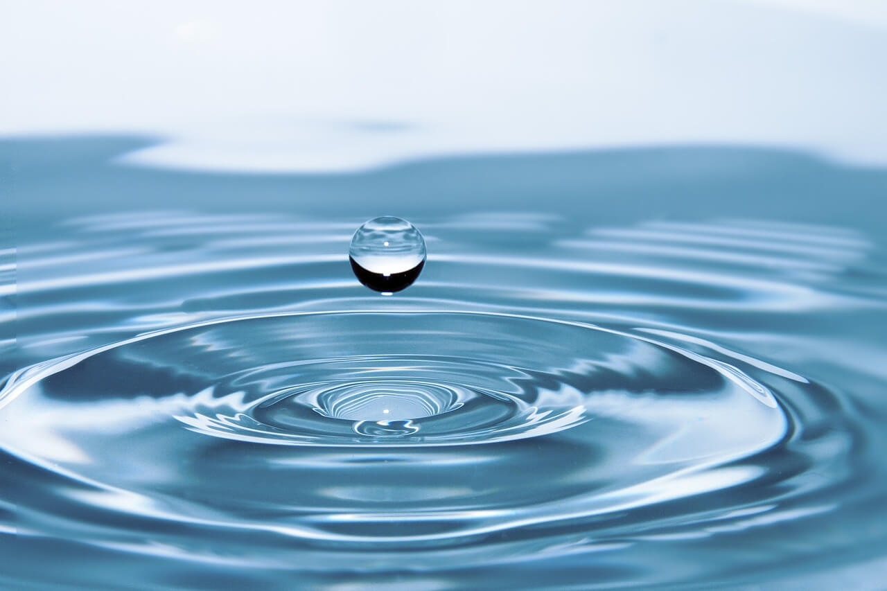
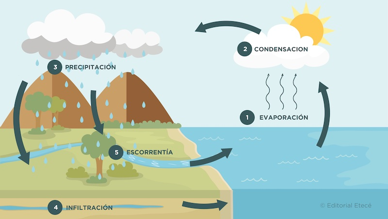

PROYECTO TRASVERSAL
EL AGUA

El agua (del latín aqua) es una sustancia cuya molécula está compuesta por dos átomos de hidrógeno y uno de oxígeno (H2O) unidos por un enlace covalente
El agua cubre el 71 % de la superficie de la corteza terrestre? Se localiza principalmente en los océanos, donde se concentra el 96,5 % del total.
El agua como tal no tiene olor, ni color ni sabor, sin embargo, el agua en la Tierra contiene minerales y sustancias orgánicas en disolución que le
pueden aportar sabores y olores más o menos detectables según la concentración de los compuestos y la temperatura del agua
La molécula de agua adopta una geometría no lineal, con los dos átomos de hidrógeno formando un ángulo de 104,45 grados entre sí
El agua tiene una constante dieléctrica relativamente elevada (78,5 a 298 K o 25 °C) y las moléculas de sustancias con carga eléctrica se disocian fácilmente en ella.
El agua es el producto final de reacciones de combustión, ya sea del hidrógeno o de un compuesto que contenga hidrógeno.
CRISIS DEL AGUA
La falta de tratamiento adecuado de aguas residuales, así como la descarga sin control de desechos industriales y agrícolas,
están deteriorando la calidad de nuestros cuerpos de agua, poniendo en peligro la salud de los ecosistemas acuáticos y la
salud pública de millones de personas que dependen de estos recursos.
Sus propiedades químicas son:
Reacciona con los óxidos ácidos (compuesto químico binario que resulta de la combinación de un elemento no metal con el oxígeno)
Reacciona con los óxidos básicos (combinación de un elemento metálico con el oxígeno)
Reacciona con los metales
Reacciona con los no metales
Se une en las sales formando hidratos

- Agua dulce
- Agua salada
- Agua salobre
- Agua mineral
- Agua negra
- Agua gris
- Agua residual
- Agua potable
- Función del agua
- Constituye el medio vital para la mayoría de las células del cuerpo
- Transporta las sustancias disueltas y compone un gran porcentaje de la sangre
- Facilita la excreción de sustancias a través de la orina, las heces y el sudor
- Mantiene y regula la temperatura corporal
- Brinda electrolitos y minerales indispensables para el funcionamiento eléctrico del organismo
Ciclo del Agua
El ciclo del agua es el proceso de circulación del agua en el planeta Tierra. Durante este ciclo,
el agua se desplaza y se transforma (por acción de factores como el frío y el calor), y atraviesa los tres
estados de la materia: líquido, sólido y gaseoso.
El ciclo del agua está conformado por cinco etapas (evaporación, condensación, precipitación, infiltración,
escorrentía) durante las cuales el agua cambia de estado en un ciclo continuo e ilimitado

El ciclo del agua es un proceso vital porque determina que haya vida en el planeta y, además, permite
conservar los ecosistemas.Es responsable de regular los climas, distribuir las precipitaciones, modificar la
temperatura de los océanos y transportar sustancias de un lugar a otro.
Gracias a este ciclo, el agua está disponible para ser aprovechada por los seres vivos, que la obtienen de los
cursos de agua o del interior de la tierra. Además, le permite al ser humano practicar la mayoría de las actividades
económicas y productivas
IMPORTANCIA DEL AGUA
La presencia masiva de agua líquida en el planeta es una de sus principales diferencias respecto a los planetas vecinos,
y es lo que permitió el nacimiento y florecimiento de la vida. Por otro lado, el agua, el hielo, el vapor y su ciclo hidrológico
mantienen la estabilidad climática. Además, el agua hidrata los suelos y contribuye a que sean fértiles para la vida vegetal y
para la actividad agrícola